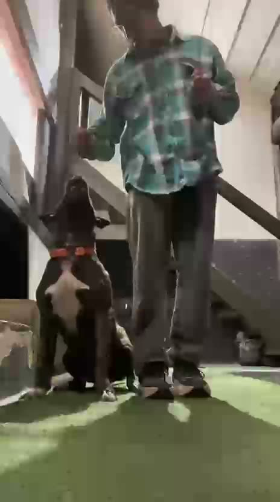
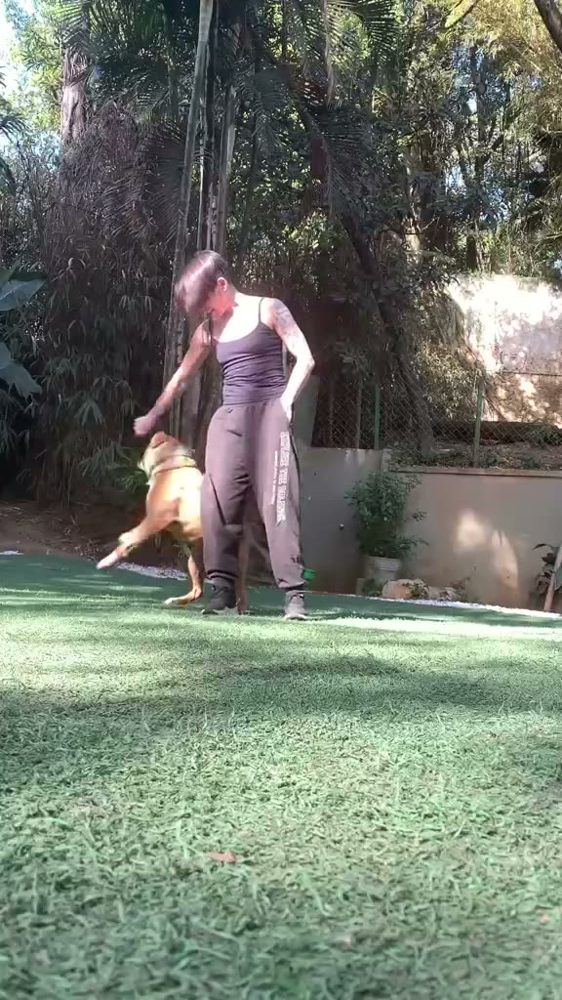
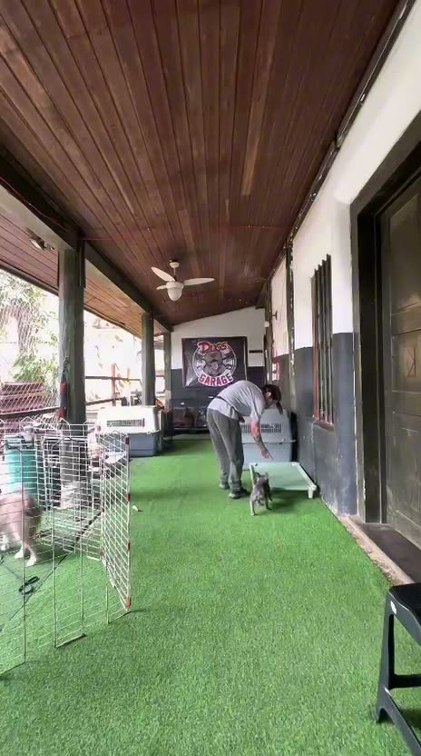
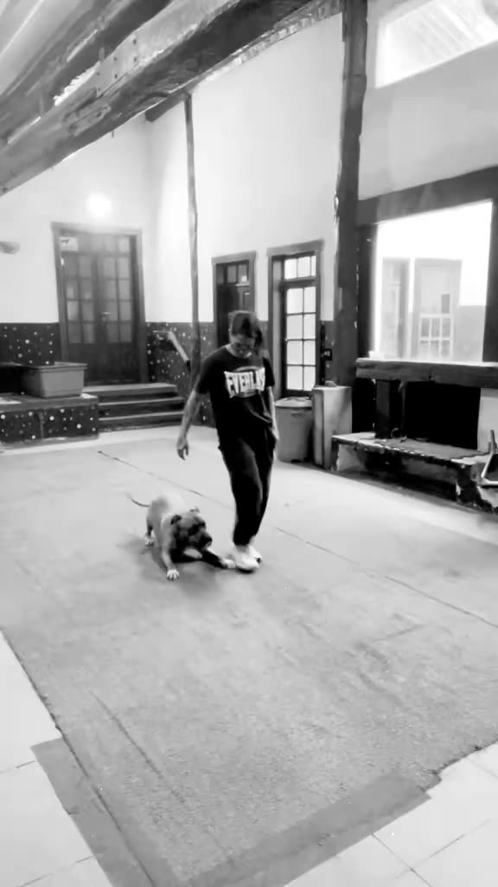
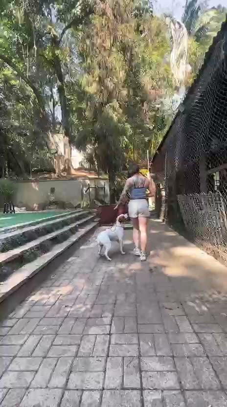
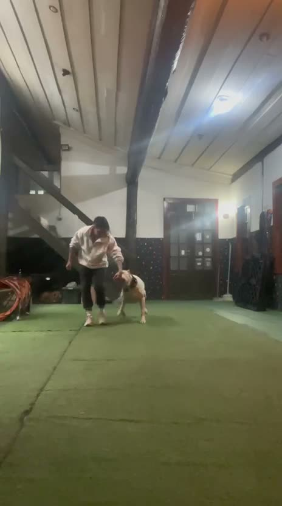

Não basta ensinar o cão.
É preciso ensinar quem convive com ele.
Adestramento e reabilitação de comportamento com a Isis, que trabalha com o cão e com o
tutor na mesma medida, incluindo casos de medo, ansiedade e agressividade.
Atendimento às segundas, terças, quartas e sextas
Na casa do cliente ou em espaço próprio
O que costuma aparecer
Se você reconhece a sua casa aqui, você não está sozinho
Estas são as situações que mais aparecem quando alguém procura a Isis pela primeira vez.
Nenhuma delas significa que você falhou com o seu cão.
Puxa muito a guia
Late demais
Destrói móveis e objetos
Não obedece a nenhum comando
Faz xixi no lugar errado
Avança em pessoas
Avança em outros cães
Muito medo e insegurança
Sofre quando fica sozinho
Filhote sem nenhuma educação
Pula nas visitas
Rouba comida
Agressividade e reatividade
Dependência emocional
Muita gente chega até a Isis cansada, com vergonha de contar o que está acontecendo dentro
de casa, com medo do próprio cão e já pensando em desistir. Chega também com esperança.
Todas essas coisas cabem na mesma conversa, e nenhuma delas precisa ser explicada com
constrangimento.
Serviços
Três frentes de trabalho
A Isis atende qualquer porte e raça, filhotes e adultos, e mistura técnicas conforme
a necessidade de cada cão.
Frente 01
Comportamento
A base do trabalho, para casos que atrapalham a convivência todos os dias.
Adestramento básico de obediência
Educação de filhotes
Correção de comportamento, como latir, destruir e puxar a guia
O que mais procuram: resolução de problemas comportamentais e escola.
Casos de agressividade, ansiedade e medo são a especialidade declarada da Isis.
Como funciona
Do primeiro contato ao acompanhamento
O caminho é o mesmo para todo mundo, e começa com uma conversa, não com um contrato.
Primeiro contato
Você conta o que está acontecendo pelo formulário ou pelo WhatsApp. A Isis responde
às segundas, terças, quartas e sextas.
Aula de avaliação
Um encontro para conhecer o cão, o tutor e a rotina da casa antes de definir
qualquer plano de trabalho.
Pacote de 4 encontros
O pacote típico tem quatro encontros, com frequência de uma vez por semana,
na sua casa ou no espaço da Isis.
Acompanhamento do tutor
Em todos os encontros o trabalho é com o cão e com o tutor na mesma medida,
porque quem convive com ele também precisa aprender.
Sobre
Quem é a Isis
A Isis trabalha com adestramento e comportamento canino há mais de cinco anos, em
São Paulo e em Osasco. Ela atende sozinha e chama parceiros quando o caso pede, e
diz que gosta de ser lembrada como a garota dos bulls, mesmo atendendo qualquer
porte e qualquer raça.
O método dela não segue uma escola única. Ela mistura técnicas conforme o cão à
frente, e não descarta nenhuma prática por princípio, porque parte do que é melhor
para cada indivíduo. O trabalho é dividido igualmente entre o cão e o tutor.
Todo o meu trabalho é voltado para a vida real, incluir o cão na rotina do dono,
ter um cão educado e que sabe se comportar no meio urbano com muita educação e
equilíbrio. Criar boas memórias entre cão e dono.
Isis, sobre o que a diferencia
EquilíbrioRotinaDedicação
Atendimentos
A Isis trabalhando
Registros reais de atendimento, com cães de portes e raças diferentes.
Os vídeos não têm som e só carregam quando você toca no play.






Todos os tutores autorizaram o uso das imagens.
Depoimentos
O que os tutores contam depois
Investimento
Valores
Onde a Isis atende
Regiões atendidas
Atendimento na casa do cliente e em espaço próprio, nos seguintes bairros e cidades.
Osasco
Jaguaré
Parque Continental
Vila Yara
Rio Pequeno
Parque dos Príncipes
Barra Funda
Vila Madalena
Pompeia
Pinheiros
Vila Mariana
Butantã
Brooklin
Morumbi
No atendimento em domicílio, a Isis atende dentro de uma distância considerável e não
atende fora de mão nos pacotes de adestramento e na aula de avaliação. Se você está
perto de uma dessas regiões, vale perguntar.
Dúvidas frequentes
O que perguntam antes de começar
Em quais dias a Isis atende?
O atendimento acontece às segundas, terças, quartas e sextas. Não há atendimento
às quintas nem aos finais de semana.
Onde acontecem os atendimentos?
Em dois formatos: na casa do cliente e em espaço próprio da Isis. A escolha entra
no formulário e é combinada na conversa inicial.
Vocês atendem qualquer porte e raça?
Sim, qualquer porte e qualquer raça. Os atendimentos se dividem quase meio a meio
entre filhotes e cães adultos.
Casos de agressividade são atendidos?
Sim. Agressividade, ansiedade e medo são a especialidade declarada da Isis, junto
com reatividade e dependência emocional.
Como é o pacote de atendimento?
O pacote típico tem quatro encontros, com frequência de uma vez por semana. Antes
dele acontece a aula de avaliação.
Existe limite de deslocamento no atendimento em domicílio?
Existe. A Isis atende dentro de uma distância considerável e não vai a lugares fora
de mão nos pacotes de adestramento e na aula de avaliação. As regiões atendidas
estão listadas na seção de regiões.
Existe alguma técnica que a Isis não usa?
Não. Ela mistura técnicas conforme o cão e trabalha de acordo com o que cada
indivíduo precisa e com o que é melhor para ele.
O trabalho é com o cão ou com o tutor?
Com os dois na mesma medida. É a ideia por trás da frase que abre este site.
Primeiro contato
Conte o que está acontecendo
Preencha o formulário. Ao enviar, o WhatsApp da Isis abre com a sua mensagem
já organizada, e você só precisa apertar enviar. Nada é agendado sozinho, tudo é
combinado na conversa.
Atendimento às segundas, terças, quartas e sextas. Não há atendimento às quintas nem aos finais de semana.
São Paulo e Osasco, na sua casa ou no espaço da Isis.
Você não precisa saber explicar o problema com termos técnicos. Conte do seu jeito.